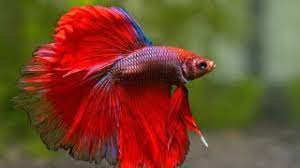
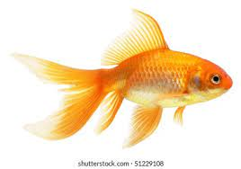
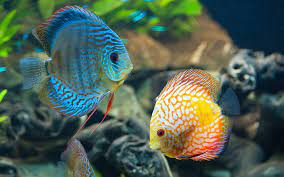
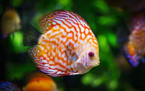
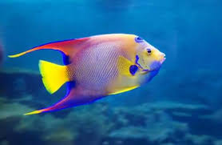
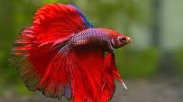
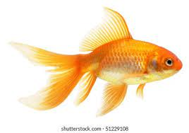
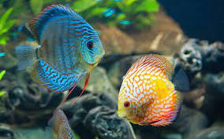
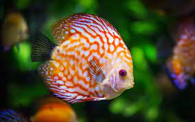
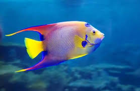

Welcome to the Nath's Pet Care Website
We are thrilled to announce the launch of our new pet care center, dedicated to providing pet owners with the tools, resources, and support they need to give their furry friends the best possible care. Our team of expert pet care specialists has years of experience working with a wide range of animals, from dogs and cats to birds and reptiles. We understand that every pet is unique, with its own specific needs and requirements, and we are committed to helping you navigate the sometimes overwhelming world of pet care with ease and confidence. So what can you expect from our pet care center? First and foremost, we offer a comprehensive range of articles, guides, and resources on every aspect of pet care, from nutrition and exercise to grooming and behavioral training. Whether you're a first-time pet owner or a seasoned pro, our easy-to-follow guides will help you make informed decisions about your pet's health and well-being. In addition, we also offer a range of products and services designed to help you care for your pet in the best possible way. From high-quality pet food and treats to grooming supplies and training aids, our selection of products has been carefully curated to ensure that every item meets our high standards of quality and effectiveness. And perhaps most importantly, we are always here to offer advice, support, and guidance whenever you need it. Whether you have a question about your pet's diet, are looking for help with training, or simply need some reassurance and support, our team of pet care experts is always here to help. So if you're looking for a one-stop-shop for all your pet care needs, look no further than the Pet Care Centre. We are committed to helping pet owners everywhere provide their beloved furry friends with the love, care, and attention they deserve, and we can't wait to welcome you to our community of caring pet owners..
 








